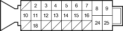

ABS Components
|
19-94 |
ABS Control Unit Inputs and Outputs for 25P Connector

Wire side of female terminals
| Terminal
number |
Wire colour | Terminal sign
(Terminal name) |
Description | Measurement (Disconnect the ABS control unit connector) | ||||
| Terminals | Conditions | Voltage | ||||||
| 2 | BLU | FWR (-)
(Front-right wheel negative) |
Detects right-front wheel sensor signal | 2 – 18 | Wheel | Spin wheel at 1 turn/ second | AC: 0.053V or above Oscilloscope 0.15 Vp-p or above | |
| 3 | BLU/ORN | FLW (+)
(Front-left wheel positive) |
Detects left-front wheel sensor signal | 3 - 12 | ||||
| 4 | WHT/BLK | STOP | Detects brake switch signal | 4 – GND | Brake pedal | Pressed | Battery Voltage | |
| Released | Below 0.3V | |||||||
| 5 | YEL/RED | RLW (+)
(Rear-left wheel positive) |
Detects left-rear wheel sensor signal | 5 - 14 | Wheel | Spin wheel at 1 turn/ second | AC: 0.053V or above Oscilloscope 0.15 Vp-p or above | |
| 6 | BLU/YEL | RRW (-)
(Right-rear wheel negative) |
Detects right-rear wheel sensor signal | 6 – 15 | ||||
| 7 | BLU/RED | WALP (Warning lamp) | Drives ABS indicator | 7 - GND | ABS indicator (Ignition switch ON (II)) | ON | About 6V | |
| OFF | Below 0.3V *1 | |||||||
| 8 | WHT/GRN | FSR + B (ABS fail-safe relay battery) | Power source for the ABS fail-safe relay | 8 – GND | At all times | Battery voltage | ||
| 9 | WHT/RED | MR + B (Motor relay battery) | Power source for the motor relay | 9 - GND | At all times | Battery voltage | ||
| 10 | LT BLU | DLC (Data link connector) | Communicates with the Honda PGM Tester | ——— | ——— | ——— | ||